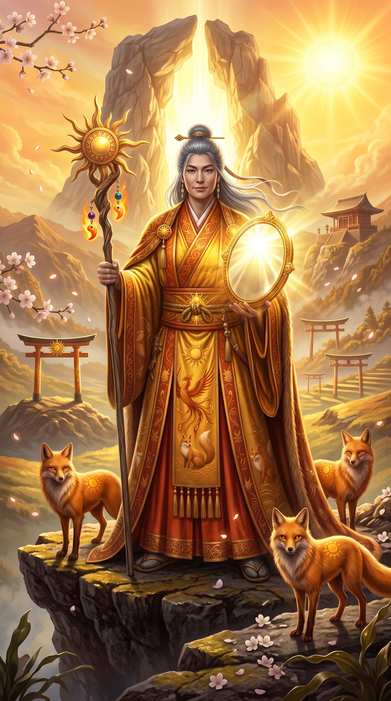
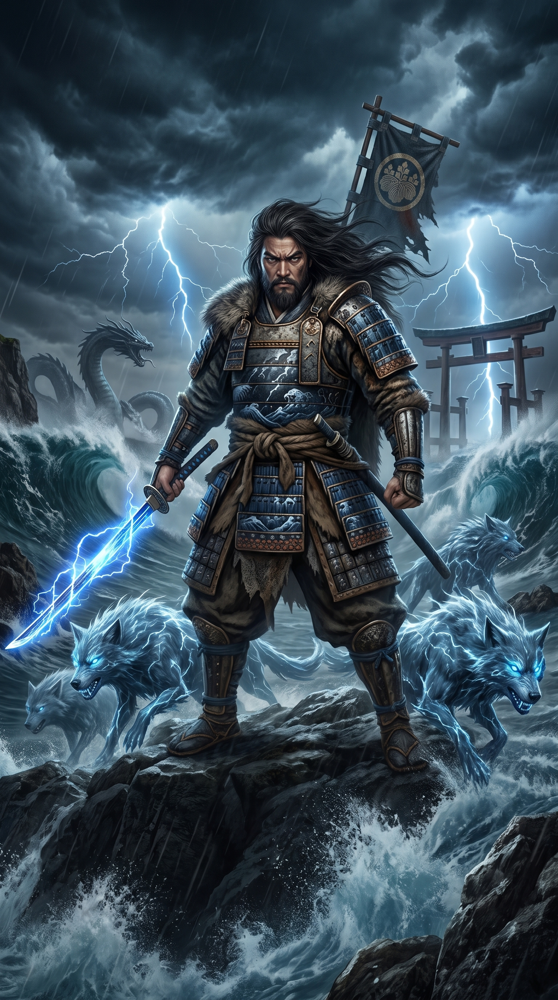
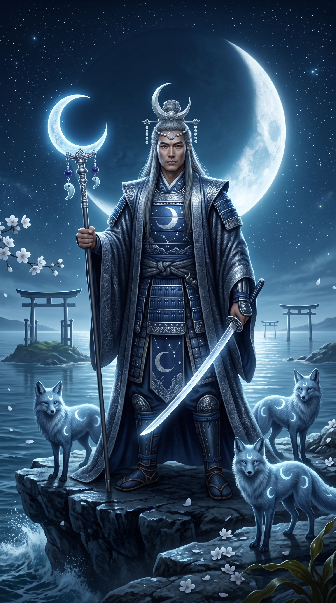
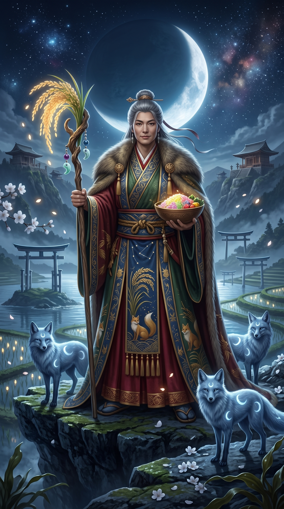

El albor de los Kami y las puertas torii
La mitología japonesa y el sintoísmo narran la génesis del archipiélago nipón a través de los ocho millones de kami: espíritus primordiales de la naturaleza, linajes divinos forjados en el fuego y el mar, y la danza cósmica entre la luz solar y el reino de las sombras.

Amaterasu — Soberana del Sol
Diosa suprema del sol y del firmamento celestial (Takamagahara), regente de la luz y ancestro mítica de la dinastía imperial.
Nacida del ojo izquierdo de Izanagi durante su rito de purificación, Amaterasu Ōmikami es la luz que nutre la vida y hace florecer los campos de arroz del Japón mítico. Tras una feroz disputa con su tempestuoso hermano Susanoo, se recluyó en la cueva sagrada de Ama-no-Iwato, sumergiendo al cosmos en una oscuridad gélida donde proliferaron los espíritus del mal. Solo la danza festiva y alegre de los demás kami logró despertar su curiosidad, permitiendo reflejar su brillo en el espejo sagrado Yata no Kagami y devolver para siempre el calor y el orden al universo.

Susanoo — Señor de las Tormentas
Kami del viento, los mares embravecidos y las tempestades; héroe marcial y destructor de monstruos primordiales.
Surgido de la nariz de Izanagi, Susanoo encarna la ferocidad incontrolable y la fuerza destructiva de la naturaleza costera. Desterrado de los cielos por su temperamento indomable, descendió a la provincia terrenal de Izumo, donde salvó a una joven doncella engañando y decapitando con astucia a la temible serpiente de ocho cabezas, Yamata no Orochi. De una de las colas de la bestia extrajo la legendaria espada Kusanagi-no-Tsurugi, forjando un legado de redención y convirtiéndose en el protector de los guerreros y las cosechas azotadas por el clima.

Tsukuyomi — Guardián de la Luna
Señor de la noche, el calendario lunar y la serenidad fría que custodia el orden del cielo nocturno.
Nacido del ojo derecho de Izanagi, Tsukuyomi-no-Mikoto gobierna las sombras y los ritmos de las mareas con estricta solemnidad. Tras indignarse por la manera en que la diosa de los alimentos preparaba los manjares terrestres y darle muerte en un arranque de cólera moral, provocó la ira irreconciliable de su hermana Amaterasu. La diosa del sol juró no volver a cruzar su mirada con él jamás, dando origen a la separación definitiva entre el día y la noche que rige la marcha del tiempo mortal.

Izanagi e Izanami — Creadores del Mundo
La pareja demiúrgica que agitó las aguas primordiales y dio origen a las islas y los primeros espíritus de Japón.
Posados sobre el Puente Flotante Celestial, Izanagi e Izanami hundieron la lanza de joyas Ame-no-nuhoko en el océano caótico; las gotas salinas que cayeron de su punta se cristalizaron formando la primera isla sagrada. Juntos engendraron las ocho grandes islas del archipiélago y a los dioses de los mares, montañas y vientos. No obstante, al nacer el kami del fuego, Izanami pereció consumida por las llamas, descendiendo a la oscura tierra de los muertos (Yomi) y quebrando para siempre el vínculo nupcial entre la vida y el abismo.

Inari — Deidad de la Abundancia
Patrón del arroz, los zorros espirituales (kitsune), la fertilidad agrícola, la herrería y la prosperidad cotidiana.
Inari Ōkami es una de las figuras más veneradas y cercanas al pueblo japonés, adorada tanto en formas masculinas como femeninas en millares de santuarios con hileras de toriis bermellones. Sus mensajeros predilectos son los zorros blancos sagrados (kitsune), guardianes sabios que portan en sus hocicos las llaves de los graneros de arroz y las joyas de la virtud. Inari simboliza el pacto sagrado entre el trabajo del campesino, el metal forjado por el herrero y la generosidad inagotable de la tierra.

Leyendas en la mitología japonesa
La cueva celestial de Ama-no-Iwato
Afligida por la violencia de Susanoo, Amaterasu se escondió dentro de una profunda caverna de roca y selló su entrada con una peña inmensa. Sin su resplandor, las plagas y los malos espíritus cubrieron las llanuras celestiales y los campos mortales.
Los dioses idearon un ingenioso plan: colgaron un espejo reluciente frente a la entrada y la alegre diosa Ame-no-Uzume danzó de manera tan cómica que provocó las risas estruendosas de todo el panteón. Amaterasu, extrañada por tanta algarabía en plena penumbra, se asomó; al ver su propio fulgor reflejado en el cristal, salió de su encierro y los dioses sellaron la cueva tras ella con una cuerda sagrada de shimenawa.
La derrota de Yamata no Orochi
Al llegar a Izumo, Susanoo encontró a una pareja de ancianos sollozando porque un monstruoso dragón-serpiente de ocho cabezas y ocho colas, con ojos encendidos como cerezas y musgo en su lomo, venía cada año a devorar a una de sus hijas, quedándoles solo Kushinadahime.
Susanoo ordenó construir una empalizada con ocho puertas y colocar en cada una tinajas repletas de sake refinado. Embriagada por el aroma del licor, cada una de las cabezas bebió hasta quedar profundamente dormida. El dios desenvainó su espada y cortó en pedazos a la bestia, tiñendo el río Hi de rojo escarlata y hallando en su interior la hoja sagrada imperial.
El descenso al reino sombrío de Yomi
Consumido por el dolor tras la muerte de Izanami, Izanagi descendió a las tinieblas de Yomi-no-kuni para rescatarla. Ella le advirtió que no debía mirarla mientras pedía audiencia a los señores oscuros para partir, pero la impaciencia venció a su esposo, quien encendió un diente de su peine como antorcha.
Al alumbrar, contempló con horror el cuerpo descompuesto de su amada infestado de gusanos y custodiado por los dioses del trueno. Aterrado, huyó mientras las furias infernales lo perseguían. Tras bloquear el paso con una roca colosal, Izanami juró arrebatarle mil vidas diarias a los hombres, a lo que Izanagi respondió que él daría vida a mil quinientos más cada amanecer.